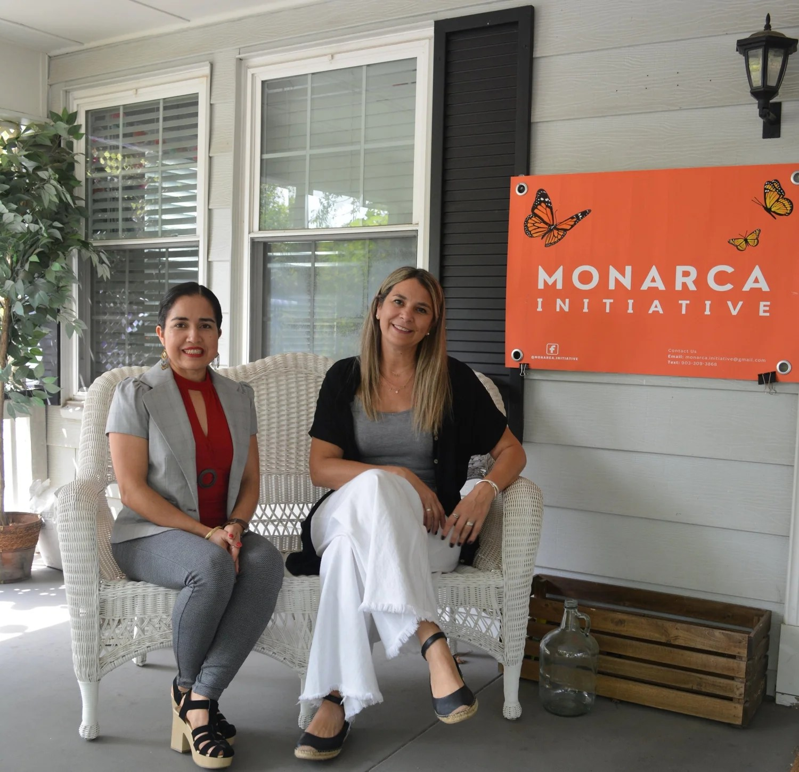

A Nonprofit Built By & For Our Community
Monarca Initiative is a Tyler, Texas-based nonprofit dedicated to removing barriers and expanding opportunity for Hispanic and Latino families throughout East Texas.
Founded in 2022 by Immigrants Who Know the Journey
Monarca Initiative was founded in 2022 by immigrants who understand the journey of adjusting, establishing roots, raising a family, and experiencing a remarkable “metamorphosis.”
- Josefina Vazquez — Mexico
- Lorena Rebagliati — Argentina

Advocacy at the Heart of Everything We Do
Advocacy is at the heart of everything we do, helping our community navigate systems, access resources, and have their voices heard. Monarca Initiative is a nonprofit organization dedicated to advancing equity and opportunity for Hispanic and Latino individuals and families in East Texas through advocacy, community engagement, and education. Since our founding, we have worked to bridge cultural, language, and access gaps by creating safe, inclusive spaces where individuals feel supported and empowered. Every program integrates advocacy, ensuring participants not only gain knowledge but also the tools and confidence to thrive in daily life.
Our Approach
We believe in small group environments where every participant is seen, heard, and supported. Our culturally responsive facilitators create safe and welcoming spaces where participants can learn at their own pace, receive individualized attention, and connect their journey with their lived experiences.
Our Core Values
These principles shape every program, decision, and relationship at Monarca Initiative.
Community
We listen first. Our programs are built with the families we serve, not just for them.
Equity
We work to remove the systemic barriers that keep families from accessing opportunity.
Education
Knowledge is power. We offer workshops and seminars that give families practical, usable tools.
Advocacy
We stand with families as they navigate complex systems, so no voice goes unheard.
Compassion
Every family has a story. We meet it with dignity, patience, and respect.
Culture
We celebrate and preserve Hispanic and Latino culture through dance, art, and storytelling.
Accomplishments & Impact
Thanks to the generous support of our donors, partners, and volunteers, we have:
-
Advocated for underserved families and Hispanic and Latino individuals by connecting them with resources, guiding them through complex processes, and ensuring their voices are heard in the community.
-
Supported community members in preparing for and passing their GED in Spanish, opening doors to higher education, better employment, and personal growth.
-
Guided residents through the U.S. citizenship process, from studying the 120 civics questions to completing mock interviews with immigration attorney and board member Ginger Young, providing personalized feedback and building confidence.
-
Offered free ESOL classes in a supportive, culturally sensitive setting for adults seeking to strengthen their English skills.
-
Delivered technology literacy workshops that have equipped participants with practical skills to navigate digital tools for work, study, and daily life. Partnership with Goodwill Industries of East Texas.
-
Partnered with local schools, libraries, and community organizations to bring resources directly where they are most needed.
-
Provided home energy audits that help families reduce electricity costs, implement simple energy-saving practices, and gain greater financial mobility. Partnership with UT Tyler College of Engineering.
Where & When
Our programs run year-round in Tyler, Texas, and surrounding East Texas communities, in collaboration with local partners who share our mission. From classrooms to community centers to online spaces, Monarca shows up where the community needs us, bringing knowledge, tools, and encouragement directly to the people we serve.
Who We Serve
Monarca Initiative serves underserved families, Hispanic and Latino individuals, and many others navigating language, cultural, and economic barriers. Our participants are people striving toward professional, educational, and personal milestones. We meet them where they are, walking alongside them as they work toward building a stronger, more secure future.